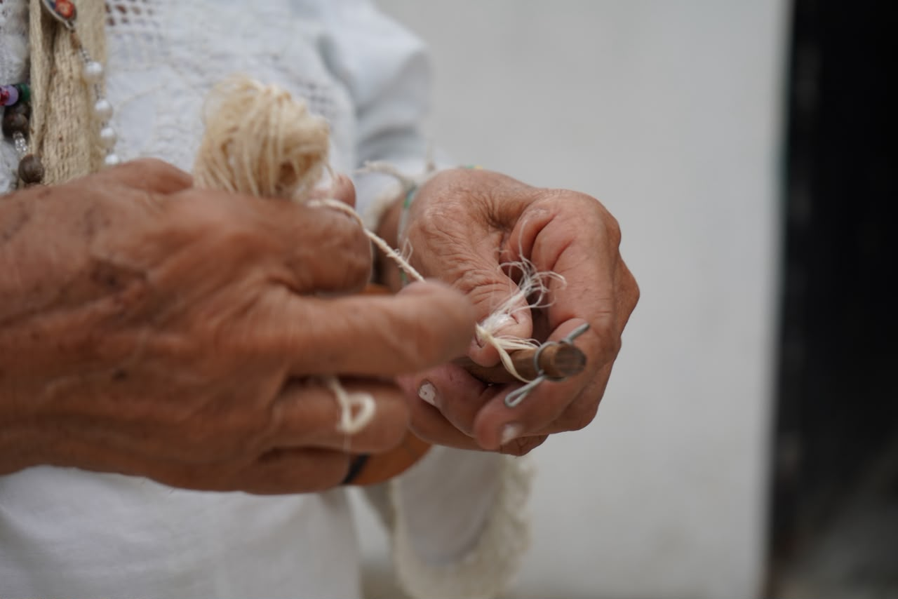

Así lo dicen las tejedoras: tejer es tejer el pensamiento. El cuerpo de la mochila es donde suben los dibujos, puntada por puntada, sin patrón impreso — van en la cabeza de quien teje y cuentan de qué familia viene: el caracol, el peine, los cerritos. La fibra — fique o lana de oveja — se tiñe con lo que da el monte: dividivi, batatilla, palo brasil.
Los dibujos tienen su orden: con el cerro se aprende, y de ahí se pasa al caracol — el pensamiento de la mujer —, a la cocada — el del hombre — y al camino, que es el que sube a la Sierra. El fique lo alistan los hombres; las mujeres lo hilan y lo tejen, muchas veces juntas, porque tejer en compañía también teje la vecindad y el comadrazgo.

En Atánquez las mochilas también se tejen por encargo: me dices el tamaño, la fibra y los colores, y una tejedora la levanta desde el chipire para ti. Eso sí, a su tiempo — una mochila no se apura. Escríbeme y la vamos cuadrando.